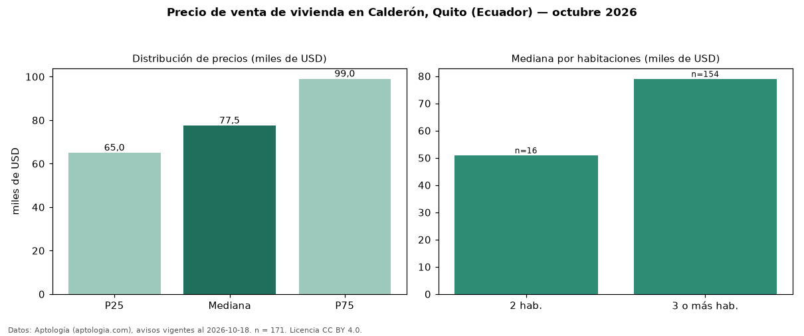

Precio de venta de vivienda en Calderón, Quito (Ecuador) — octubre 2026
USD 77.500 es el precio mediano de vivienda en venta en Calderón, Quito (Ecuador) (n = 171 avisos). Por metro cuadrado, la mediana es USD 634/m² (n = 163 avisos con área). Por tipo: 79 % casas, 21 % departamentos. El área mediana anunciada es 125 m². El segmento con más oferta es el de 3 o más habitaciones (154 avisos, mediana USD 79.000); pasar de 2 habitaciones a 3 o más habitaciones cambia la mediana +55 %. La cuota de mantenimiento o condominio mediana declarada es USD 30,00 al mes (n = 29). La mitad central de los avisos va de USD 65.000 a USD 99.000 (razón 1,5), una dispersión moderada. Datos: Aptología (aptologia.com), CC BY 4.0 — https://www.aptologia.com/ec/venta/quito/calderon. Archivos: PDF, CSV con las cifras y gráfica PNG.

| Avisos únicos | 171 |
|---|---|
| Percentil 25 | COP 65.000 |
| Mediana | COP 77.500 |
| Percentil 75 | COP 99.000 |
| Mediana por m² | COP 633 |
Fuente: avisos vigentes de portales inmobiliarios recopilados por Aptología, deduplicados (mínimo 30 avisos únicos por celda). Precios pedidos, no cerrados. Fecha: 2026-10-18.